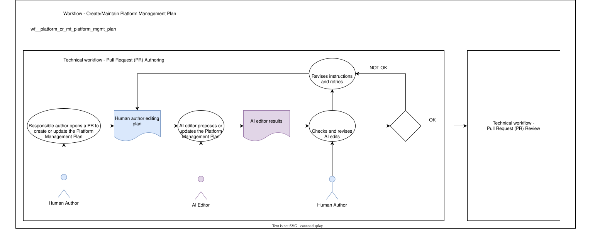

Pilot: Update the Change Management Plan#
The Task#
An audit found that the S-CORE Change Management Plan does not fully match the current change-management process. Update the plan so a contributor can tell how to create, analyze, implement, and close a Change Request, and who decides at each step.
The target is docs/platform_management_plan/change_management.rst in
eclipse-score/score, document doc__platform_change_management_plan,
which implements Platform Change Management ....
This page records the comparison and proposed changes. The plan itself has
not been edited, and no upstream issue, PR, or human approval is claimed.
What Was Compared#
Reviewed on 15 November 2026:
The published plan, version 3, checked against its source at 72f142c37d.
Process-description
mainat 1190e443a8, verified against the remote branch. The latest change-management update is the 19 October audit fix: guideline version 2 and impact-analysis template version 3.
The review covers the guideline, workflows, concept, requirements, templates, review checklist, and work products. The related FEP guide was also checked. FEP means Feature & Enhancement Proposal.
The plan already includes the recent scope and lifecycle clarification, request date, impact-analysis topics, assignees, and target release. Keep that content; this is not a complete rewrite.
Changes to Make#
Plan section |
Finding |
Proposed change |
|---|---|---|
Change Request Execution |
The plan explains feature/component changes but does not distinguish improvements, including process improvements. |
State that improvements are not Change Requests, as Change Request Guideline specifies. Use an improvement issue for this plan correction, not a feature request or FEP. |
Workflow and FEP Track |
The standard route gives analysis and closure to a generic committer and implementation to a contributor. This does not explain the process’s assigned responsibilities. |
Align with Activities for Change Requests: Architecture Community approves creation and is responsible for analysis; the Project Lead approves analysis. Platform Team owns feature implementation and closure; Delivery Team owns component implementation and closure. Map FEP participants to these roles without dropping required approvals. |
Change Request Attributes |
The starting release is inferred from the linked PR’s base commit. A later PR or rebase does not reliably identify the state at request creation. |
Record the starting release or fixed baseline reference in the request when created, separately from the target release. See Change Request attribute: d.... |
Impact analysis |
The plan lists the current analysis topics, but says the template is used “if applicable”. Readers could mistake this for optional analysis. |
Distinguish required analysis content from optional use of the separate template. Explain where to record affected versus modified work products, interface responsibilities, and implementation/verification schedules. Use Impact Analysis Template and Change Request Review Check...; do not add another form. |
Implementation and closure |
The plan tracks linked work and checks verification, but does not name the responsible leads for regular status communication. |
Add the Project Lead for feature changes and Delivery Team lead for component changes. Keep the existing verification checks and require the responsible team’s closure confirmation. See Concept Description and Close Change Request. |
Objectives and Scope |
The plan does not explain the tailoring identified by the process guideline. |
Add a short, project-confirmed explanation for Change Management Requireme.... Do not copy an exclusion without checking that its reasoning applies to S-CORE. |
Change Management SW Platform Work Products |
The section says “not applicable”, leaving the plan’s outputs unmapped. |
Replace it with links to the existing plan, issue records, feature/ component request documents, and relevant decision and analysis records. Follow Platform Management Plan Te...; no new report is needed. |
Clarify Template Use#
The concept and getting-started guide use Decision Records to create Change Requests. The guideline’s creation instructions instead name feature/component template content. The S-CORE plan requires Decision Records for FEPs but makes them optional for other requests.
Ask the Process Community to clarify how these instructions fit together before rewriting that part of the plan. Keep the existing FEP route; do not invent a rule requiring every request to use FEP, or assume a Decision Record is always optional. Update the linked FEP guide only if the agreed correction affects it.
Also ask the Process Community to resolve an inconsistency in the guideline’s analysis responsibilities. The responsibility table lists the Architecture Community as responsible for analysis and the Project Lead as approver, while the “Analyze Change Request” prose describes the Project Lead, supported by the Platform Team, as analyzing the request together with the Architecture Community. Do not select one interpretation in the proposed plan correction until the intended responsibilities are confirmed.
How Humans and AI Do the Work#
This is maintenance of a plan under Create/Maintain Platform Ma..., not a feature/component change. The Project Lead is responsible; the Process Community approves, with support from the Safety, Security, and Quality Managers. Human committer approval also applies. These are the roles reviewing this plan update, distinct from the roles for future Change Requests described inside the plan.
Human author starts the work. Open an improvement issue in
eclipse-score/scoredescribing the audit finding. Link this comparison and confirm the source revisions and required reviewers.PR Authoring. Follow Technical Workflow: Pull Request Authoring. An AI editor may draft changes to the target plan from the findings above. The author checks every edit against the process and obtains the template-use clarification. Preserve the document ID, work-product link, and existing correct content. Update related text or diagrams only where the correction makes them inconsistent. Run the target repository’s documentation checks.
PR Review. Follow Technical Workflow: Pull Request Review. Request human review and AI review of the same PR version in parallel. The human reviewer checks the whole change, not just AI comments. The author answers comments and corrects the draft; the human reviewer checks those corrections.
Human approval. The required humans approve the final changes in GitHub. AI cannot sign off or merge. Keep findings and decisions in the issue and PR; no separate pilot report is required.


Fig. 29 The author checks AI edits; independent PR review ends with human approval.#
Ready for Review#
A reader can find the request route, required information, responsible roles, and approval points without guessing. The template-use question has a human decision, and the plan and FEP guide do not contradict that decision. Use Documentation Review Checklist during the review. Passing a build does not replace checking that the instructions are clear and correct.